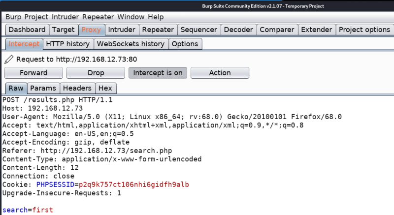

3.1 Capture request with Burp Suite
a) Let’s capture the request.
• Open Burp Suite.
• Go to “Proxy->Intercept”.
• Make sure the button “Intercept is on”.
• Navigate to http://192.168.12.73/search.php.
NOTICE
Before going to the link change the “Preferences” in your Browser.
Select the Manual proxy configuration radio button. Enter 127.0.0.1 in the HTTP Proxy field and enter 8080 in the Port field. Make sure the Use this proxy server for all protocols box is checked. Delete anything that’s in the No proxy for field. Save the settings.
You'll get something like the following.

b) Save the request to a text file.
POST /results.php HTTP/1.1
Host: 192.168.12.73
User-Agent: Mozilla/5.0 (X11; Linux x86_64; rv:68.0) Gecko/20100101 Firefox/68.0
Accept: text/html,application/xhtml+xml,application/xml;q=0.9,*/*;q=0.8
Accept-Language: en-US,en;q=0.5
Accept-Encoding: gzip, deflate
Referer: http://192.168.12.73/search.php
Content-Type: application/x-www-form-urlencoded
Content-Length: 12
Connection: close
Cookie: PHPSESSID=p2q9k757ct106nhi6gidfh9alb
Upgrade-Insecure-Requests: 1
search=first
 Index
Index